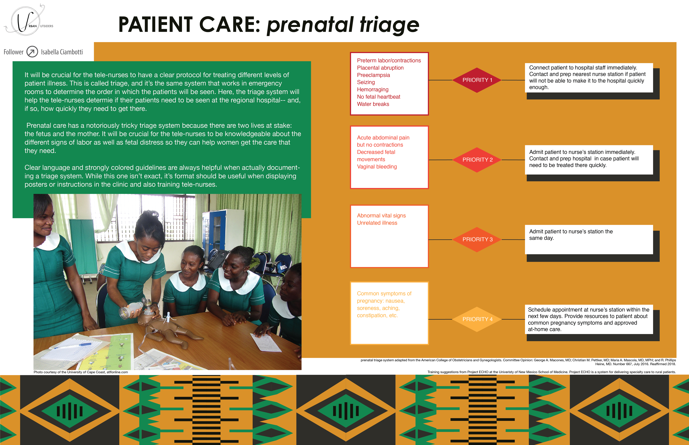
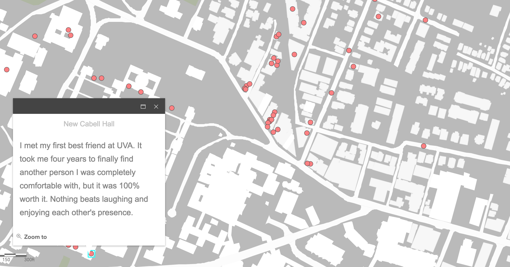

Collected and researched Trump's tweets, policies, and executive actions to demonstrate how he uses media to manipulate reality. Featured in the Virginia Quarterly Review Winter 2019 issue. (Adobe Illustrator, Indesign)

Mined twitter data from the week of Freddie Gray's death to create both an interactive and static visualization tracking conversastions and engagement. (Screenshots below from interactive page). (Tableau, Python, Illustrator)


Cleaned and analyzed text data from Uthini's app, creating more detailed categories and analyzing user trends with machine learning. (Plotly, Python)

Reasearched and analyzed build projects and stakeholder perspectives for a design thinking course. In order: the extensive rennovation of Alderman Library, a pop-up telemedicine clinic, and a proprosed road redevelopment. (Illustrator)

Mined GPS data to track the walking habits of UVA students over the course of a month. (Tableau, Illustrator)
Collected survey responses from hundreds of UVA students to build an interactive map featuring various stories geotagged around grounds. (Screenshots of page in action below)


